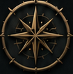
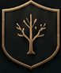

SOMBRAS DE GELO E FERROAÇÃOTESTE — MOTOR DE REGRAS

IRIAESPECIALISTA COMPLETO • NÍVEL 1
MOTOR DE REGRAS2D62 dados
+ATRIBUTOSABEDORIA +1
+PERÍCIAPERCEPÇÃO 1
+SITUAÇÃO0
??
AGUARDANDO ROLAGEMNenhum dado é criado pela interface.
Após a resolução mecânica, esta área apenas projeta o retorno canônico.
A interface não cria consequência, sucesso parcial, ajuda, item, Effort, magia, ataque, resistência ou dano.